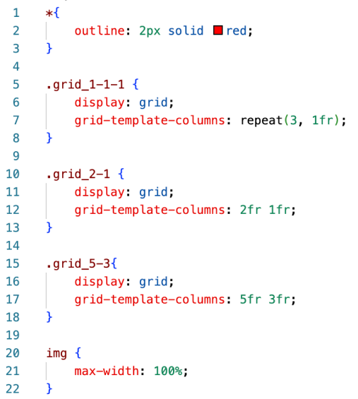
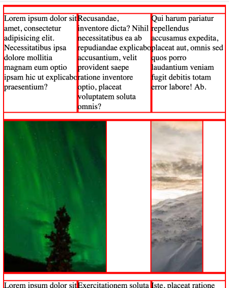
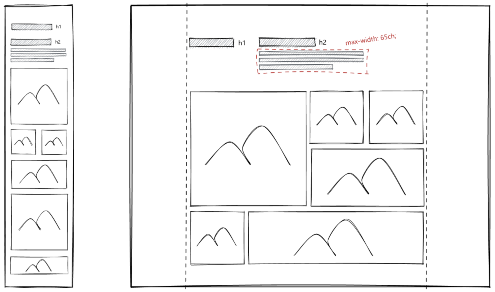
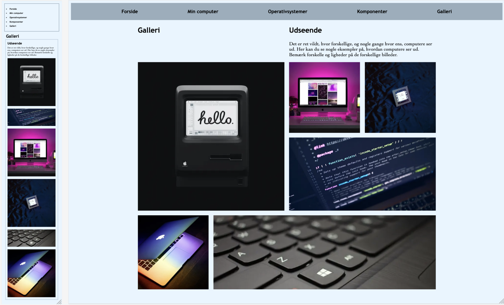

Kod en hjemmeside
I dette tema lærte vi at bygge en hjemmeside op fra bunden i html og css. Vi lærte blandt andet at bruge grids til at skabe struktur på hjemmesiden og media queries til at gøre siden responsiv.


På billederne ovenfor ses en af de grid øvelser vi skulle lave. Koden til venstre og resultatet til højre. Grid skaber et gitter på hjemmesiden som man kan placere sit indhold indenfor. Ved at vi skriver i koden, at der skal være (3, 1fr) kommer der et grid med 3 kolonner som hver fylder 1 'fraction' af skærmen. Resultatet af dette ses i den øverste del af billedet til højre.
Et indblik i design
Udover det har vi også lært en del om forskellige design stile og principper. For eksempel har vi fået indblik i fire af de store design stile: Modernisme, postmodernisme, retro design og futurisme. Vi har også lært om gestaltlovene og vigtigheden af dette i design. De beskriver nemlig den måde vi opfatter og sætter visuelle inputs i orden på. Sidst men ikke mindst har vi lært om typografi og om hvordan brugeren læser på et website. Vi har både lært hvordan forskellige typografier kan ændre udtrykket af ens design, men også hvor vigtigt det er at bruge den rigtige form for skrifttype til forskellige ting, så man sikrer, at læsbarheden på ens site er god.
studiestartsprøven
Det var også i dette tema, at vi skulle aflevere studiestartsprøven. Vi arbejdede i to trin med det site der skulle udgøre prøven. Først kodede vi mobilsitetet og derefter gjorde vi det responsivt, så det også passede til computer størrelse. Der var forskellige krav der skulle overholdes for at bestå prøven og det gav en god fornemmelse for, hvordan de andre opgaver på semesteret ville være. Så her lærte vi altså både helt konkret at kode en hjemmeside, men også hvordan vi fremadrettet ville komme til at arbejde.


På billederne ses øverst den wireframe vi fik udleveret som vi skulle kode vores site efter og nederst mit endelige resultat.